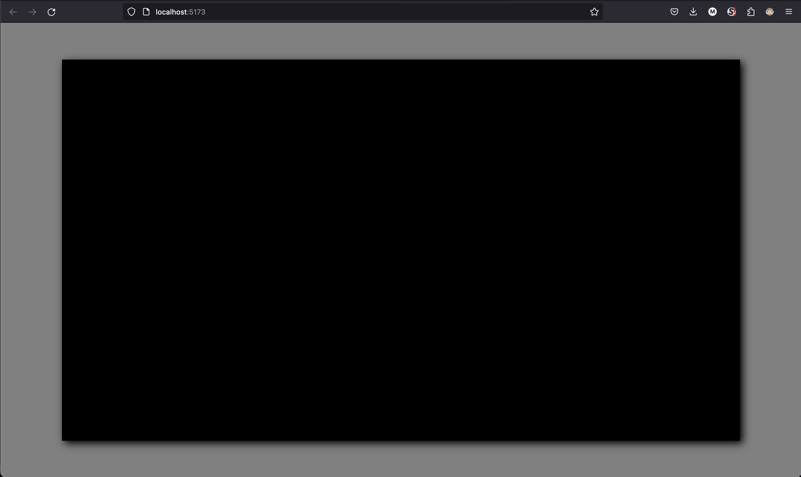
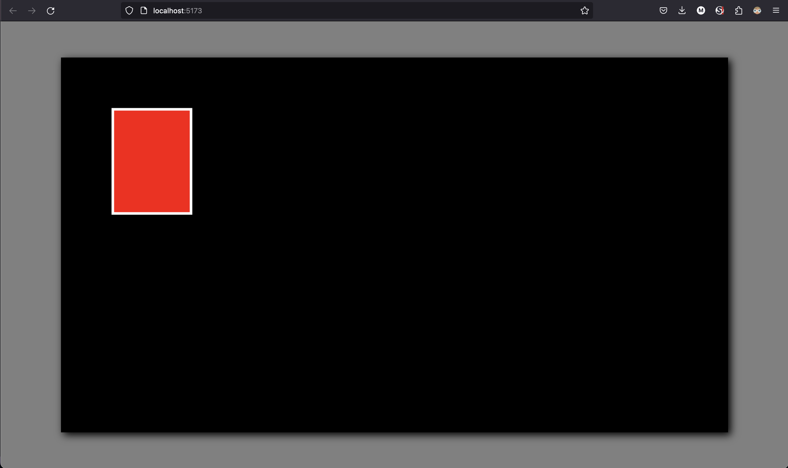
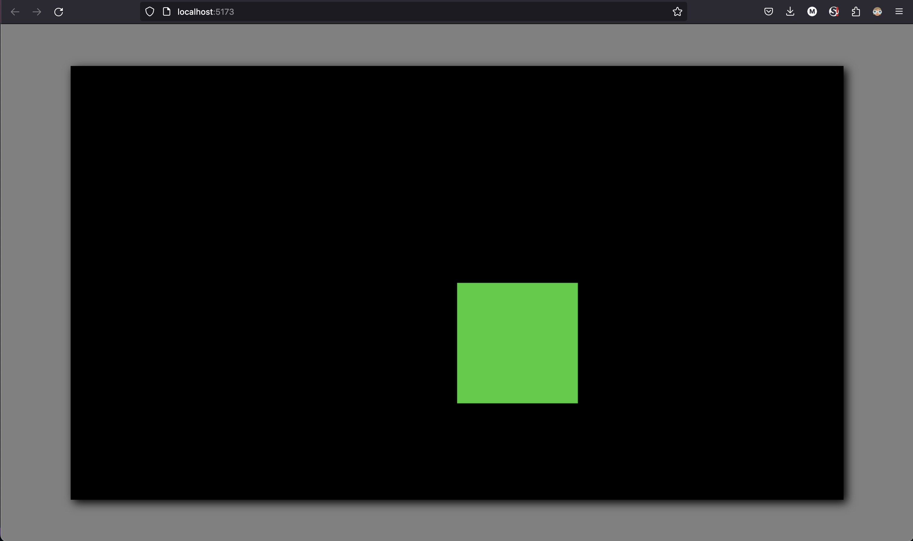
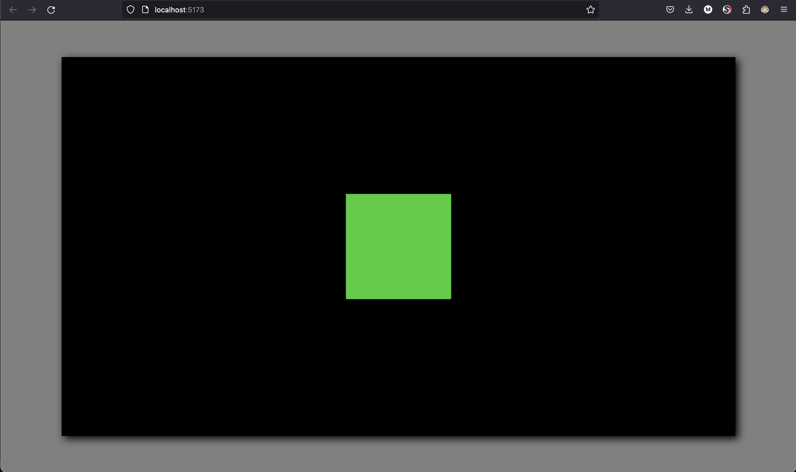
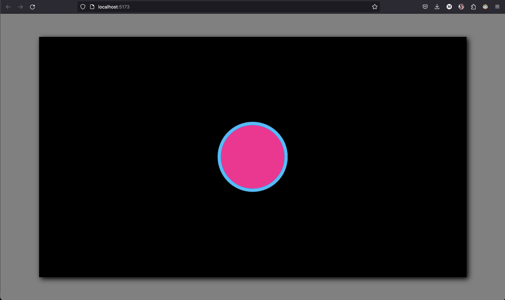
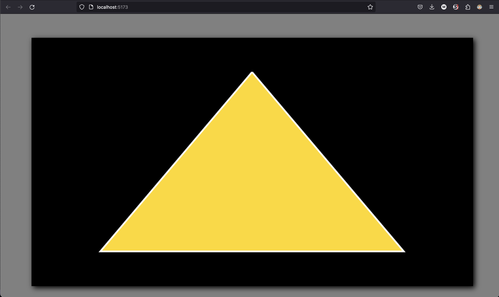
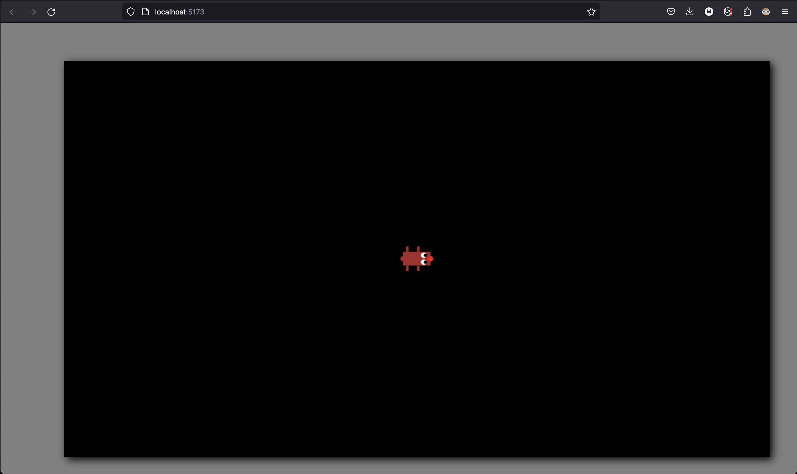

Drawing with HTML Canvas
Now that we have our project in place, let's start putting stuff on the screen with HTML Canvas. First order of business, we need to have a canvas to draw on. So let's do that. In our index.html file, let's give ourselves a canvas element inside a container div.
<body>
<div id="canvas-container">
<canvas id="game-canvas"></canvas>
</div>
<script type="module" src="/src/main.ts"></script>
</body>
Let's go ahead and define our drawing surface a little bit better on the page. This is just a simple game, and I don't want to have to worry about monitor sizes and scaling and all that, so we're going to make our canvas a fixed size and place it in the middle of the window.
* {
margin: 0;
padding: 0;
box-sizing: border-box;
}
html,body {
width: 100%;
height: 100%;
display: flex;
justify-content: center;
align-items: center;
overflow: hidden;
background-color: grey;
}
#canvas-container {
margin: auto;
width: 1280px;
height: 720px;
background-color: black;
box-shadow: 5px 5px 15px black;
}

Great, now our drawing surface is fully prepared. You'll notice we're not setting a width and height for our canvas in our CSS. Width and height will need to be set as properties of the element, not as CSS styles. If we try to do it in CSS, our canvas will render as a (small) default size, and then be stretched to our chose dimensions by CSS, distorting and resizing everything we've drawn, and we don't want that. From here on, we're (mostly) done with our HTML and CSS, and can spend the rest of our time building the game in TypeScript. Let's go ahead and do our first drawing!
Let's go into our main.ts file. The first thing we have to do is get a reference to our game canvas.
const canvas = document.getElementById('game-canvas') as HTMLCanvasElement;
canvas.width = 1280;
canvas.height = 720;
If we don't say as HTMLCanvasElement, our editor will tell us that our canvas may be undefined, and we'll have to check for this condition repeatedly down the road. We are positive this canvas is present, so we don't need to worry about this check, and we can confidently tell TS to chill out and trust us that it exists. You can see we're now setting the size of our canvas. We could also have done this on the canvas tag itself with the width and height attributes.
The HTMLCanvasElement doesn't expose a way for us to draw on it. To do that, we have to get a reference to a "rendering context". There are several available to us, (see reference here), but the best for our purposes is going to be a plain old 2d drawing surface.
const ctx = canvas.getContext('2d') as CanvasRenderingContext2D;
This rendering context offers us lots of ways to draw things. It has methods for outlining and filling rectangles, arcs, custom drawn paths, text, and probably some other stuff I haven't used. Let's start by drawing a rectangle on our canvas.
ctx.fillStyle = 'red';
ctx.strokeStyle = 'white';
ctx.lineWidth = 5;
ctx.fillRect(100, 100, 150, 200);
ctx.strokeRect(100, 100, 150, 200);

The context properties are pretty self-explanatory. The only thing that really bears mentioning is that the styles' string value can be a named color, an rgb or rgba string, or an hsl or hsla string. The fillRect method's arguments represent the x and y origin for the rectangle to be drawn from, followed by its width and height. You'll notice a couple of things about this. For a start, our canvas does not use the Cartesian coordinate system you may have learned in school, where the point (0, 0) is located in the middle, with right/up representing positive x/y values and left/down representing negative x/y values. (0, 0) on our canvas is the top left corner, with right/down representing positive x/y values. You'll also notice that the top left corner of our red square aligns with the top left corner of our canvas. The fillRect method's origin coordinates represent the top left corner of the rectangle, with the width and height extending right and down from there, (unless you use negative values, which you can do). Here's another illustration. Let's try to draw a square in the middle of the screen.
ctx.fillStyle = 'limegreen';
ctx.fillRect(canvas.width/2, canvas.height/2, 200, 200);

This isn't aligned in the center of our canvas, because we set its origin position to the center of the canvas, but its origin is the top left of the square. If we want to draw this in the center, we'll have to calculate a different origin based on our square's dimensions.
ctx.fillStyle = 'limegreen';
const squareWidth = 200;
const squareHeight = 200;
ctx.fillRect(canvas.width/2 - squareWidth/2, canvas.height/2 - squareHeight/2, 200, 200);

We'll be doing this again. It's a lot easier to reason about the position of a rectangle as its center than as its top left corner.
Let's do circles next.
ctx.fillStyle = 'deeppink';
ctx.strokeStyle = 'deepskyblue';
ctx.beginPath();
ctx.arc(canvas.width/2, canvas.height/2, 100, 0, Math.PI * 2);
ctx.fill();
ctx.stroke();

After we set our style properties, we begin a "path". This path allows us to more or less draw whatever shapes we want. In this case, we are using the arc() method to draw... an arc. But we draw it long enough that it eventually connects back to its starting point, making a circle. The first two arguments to this method are the x and y position of the center of our arc. The next argument is its radius. The next two arguments are the starting and ending angles. So you'll see this works kind of like using a compass to draw an arc. We stick our pin at our origin, set the length of our arm, put our pencil down at a certain angle relative to our origin, then trace our arc until we hit our target angle relative to our origin. Now, what's this Math.PI * 2 business? While we usually think of angles in terms of degrees, we work with radians in this context. 2π radians is equivalent to 360 degrees. There's also an optional argument, which we have omitted, which will allow you to choose whether to draw the arc clockwise or counterclockwise.
Let's do one last exercise to demonstrate another use of the "path".
ctx.fillStyle = 'gold';
ctx.strokeStyle = 'white';
ctx.lineWidth = 5;
ctx.beginPath();
ctx.moveTo(canvas.width/2, 100);
ctx.lineTo(200, canvas.height - 100);
ctx.lineTo(canvas.width - 200, canvas.height - 100);
ctx.lineTo(canvas.width/2, 100);
ctx.fill();
ctx.stroke();

Our new methods here are ctx.moveTo and ctx.lineTo. Each of these has just two arguments, their destination x and y coordinates. Think of ctx.moveTo as moving your pen around the canvas without putting the tip down, and ctx.lineTo as moving your pen with the tip down. We start our path, move to a starting point, put our pen tip to the canvas, then draw lines to several other points, before finally coming back to our starting point. When we call ctx.fill(), it will fill in the shape we have drawn, while ctx.stroke() will display the lines we have made with our pen.
You can explore the other properties and methods of the 2d canvas context here.
To wrap this up, let's draw our player.
const width = 50;
const height = 25;
ctx.translate(canvas.width/2, canvas.height/2);
// body
ctx.fillStyle = "brown";
ctx.fillRect(-width / 2, -height / 2, width, height);
// nose
ctx.beginPath();
ctx.arc(width / 2, 0, 5, 0, Math.PI * 2);
ctx.fillStyle = "red";
ctx.fill();
// right eye
ctx.beginPath();
ctx.arc(width / 4, height / 4, 5, 0, Math.PI * 2);
ctx.fillStyle = "white";
ctx.fill();
ctx.beginPath();
ctx.arc(width / 4 + 3, height / 4, 3, 0, Math.PI * 2);
ctx.fillStyle = "black";
ctx.fill();
// left eye
ctx.beginPath();
ctx.arc(width / 4, -height / 4, 5, 0, Math.PI * 2);
ctx.fillStyle = "white";
ctx.fill();
ctx.beginPath();
ctx.arc(width / 4 + 3, -height / 4, 3, 0, Math.PI * 2);
ctx.fillStyle = "black";
ctx.fill();
// legs
ctx.fillStyle = "brown";
ctx.fillRect(0, -height / 2 - 10, 5, 10);
ctx.fillRect(0, height / 2, 5, 10);
ctx.fillRect(-20, -height / 2 - 10, 5, 10);
ctx.fillRect(-20, height / 2, 5, 10);
// tail
ctx.beginPath();
ctx.arc(-width / 2, 0, 5, 0, Math.PI * 2);
ctx.fill();

There's one last important tidbit in here. It's a real pain when drawing a more complex figure to have to position all your points and paths based on the position of the character. To simplify this, we can "translate" the canvas, meaning we can actually shift its origin point, its (0, 0) point, from the top left corner of the canvas to anywhere we want. By using ctx.translate and passing in the coordinates of the center of the canvas, can draw our player with all points relative to (0, 0) and avoid a whole bunch of + canvas.width/2 and + canvas.height/2. This will also come in necessary when it's time to rotate objects, but we'll save that for when we start controlling our player.
Take note that every time we set some property of the canvas context, like styling, translating, rotating, all this stuff, the change sticks around until we explicitly change it again. If we know we're going to make a bunch of difficult-to-reverse changes, we can save the current state of the canvas context's properties, then do whatever we want to the context, then restore it back to its old state using the ctx.save() and ctx.restore() methods. This operation isn't free, however, so you may want to use it sparingly.